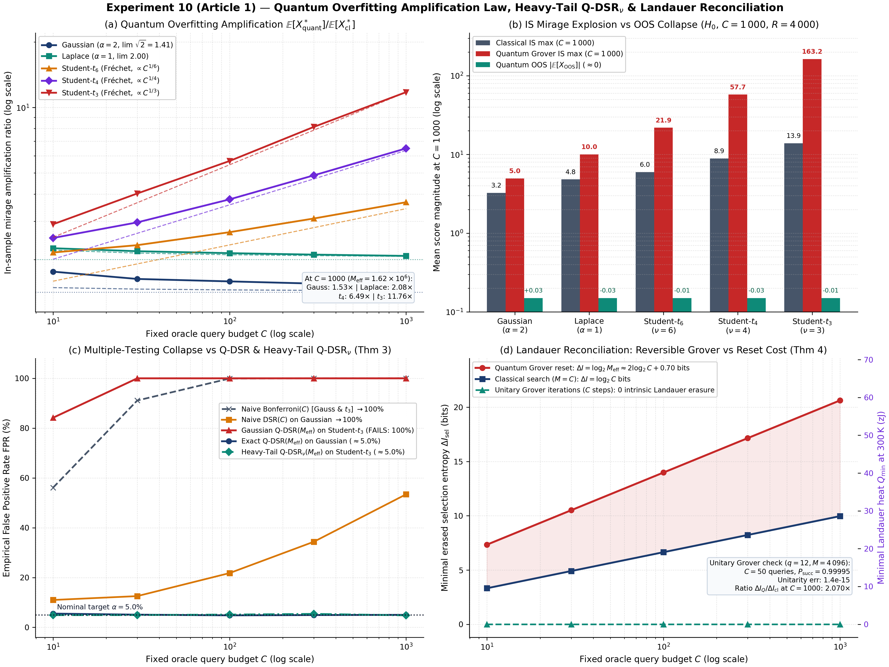
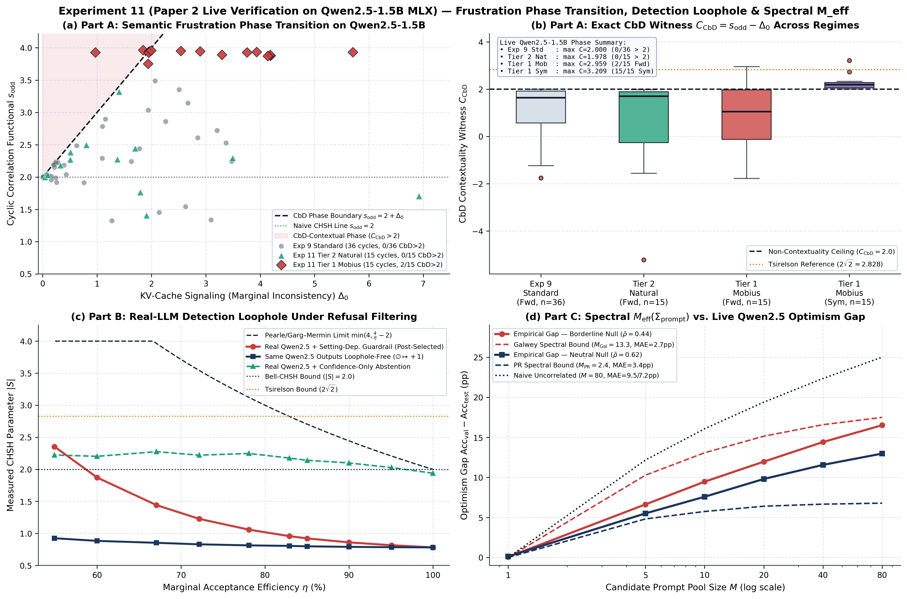
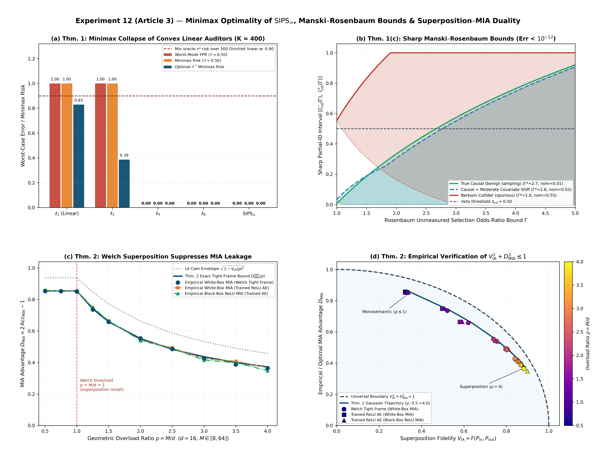
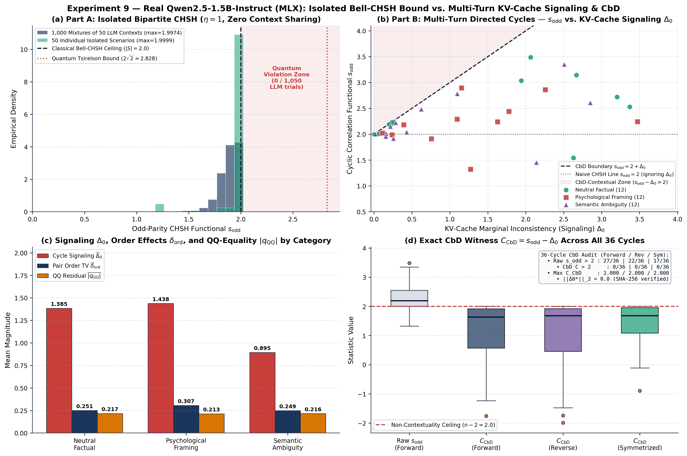

Three original research preprints by Fabien Pierret (Independent Researcher, ORCID 0009-0001-1223-2170) delineating the exact mathematical boundary between quantum post-selection and classical post-selection in quantitative finance, autoregressive Large Language Models, and deep neural representations — backed by 66 machine-checked Lean 4 theorems (dual-agent audited), 4 permanent CERN Zenodo DOIs, and 12 deterministic reproducible experiments.
Compiled cleanly with leanprover/lean4:v4.36.0 (zero external dependencies, exit code 0,
0 warnings, 66 / 66 public theorems checked via #print axioms depending strictly
on [propext, Classical.choice, Quot.sound]; zero sorryAx, zero native_decide,
every quotient denominator proven > 0, and explicit non-vacuity witnesses for every conditional theorem).
Audited by two independent adversarial agents (Statement Auditor + Math Fidelity Referee).
(a_quant/a_cl)ν = κ²C, scale cancellation, unboundedness past any constant B, Student-t_3 witness (>11.7×), rational Bernoulli bound, non-asymptotic collapse of C-indexed Bonferroni & Šidák (arbitrary M ≥ Ck) to FPR ≥ 1 - ε, exact Q-DSR_ν monotonicity/calibration, and heavy-tail dominance over Gaussian Q-DSR.
|S| ≤ 2 on finite LHV mixtures; CbD necessity |S| - 2Δ_mismatch ≤ 2 & marginal-shift coupling bound; autoregressive Lemma 1, Δ_0 = 2Δ_TV, Master Absorption Identity (Eq. 5), two-sided Corollaries 1A & 1B, exact Möbius Symmetrization Law derived from forward/reverse tables, plus 4 purely classical rational LLM/LHV witnesses (zero quantum physics) including a 5-row abstention detection-loophole table.
K ≥ 2 minimax blindness of every convex linear auditor + strict head-to-head separation vs. SIPS_∞; zero minimax risk & full Uniqueness Theorem of SIPS_∞ (with axiom-satisfiability witness); Rosenbaum odds-ratio weight bracket IFF (Eq. 6) + sharp Manski–Rosenbaum Hájek bounds with vertex attainment & Fin n sample sum; arbitrary-dimension (d, M) Frobenius & max-coherence Welch bounds + rational 2×4 UNTF saturation; arbitrary-dimension d spectral Jensen bound (Eq. 19, equality IFF isotropic), scalar Sherman–Morrison, ρ ≤ 1 plateau, and strict overload SNR attenuation.
lean lean/DCQEPostSelectionCore.lean # Exit code 0 · 0 warnings · 66 / 66 public theorems checked via #print axioms: # exclusively [propext, Classical.choice, Quot.sound] (0 sorryAx, 0 native_decide)
t_ν integrals, Slepian's inequality), KDL (2015) maximal-coupling sufficiency, clipped I_col (Eq. 7b),
matrix spectral decomposition (Eq. 18), Loewner operator monotonicity for ρ ≤ 1, matrix Sherman–Morrison, Markov/erf/Le Cam
bounds (Eqs. 14–16), and live Qwen2.5-1.5B / Monte Carlo experiments are proved analytically in the companion PDFs and reproduced deterministically in sim/.
| Preprint & Camera-Ready PDF | CERN Zenodo DOI | Core Discovery & Empirical Verification | Verification Layers |
|---|---|---|---|
|
Paper 1: Quantum Overfitting Amplification & Heavy-Tail Q-DSRν Download PDF (8 pp.) |
10.5281/zenodo.24591340 |
Universal 2^{1/α} sub-Weibull amplification vs. unbounded polynomial Fréchet explosion Θ(κ^{2/ν} C^{1/ν}) reaching 11.76× on Student-t_3 at C=1,000 (OOS = -0.006). Naive DSR collapses to 53.4%–100% FPR; exact Q-DSR_ν restores 4.6%–5.4% FPR at α=5%. |
Lean 4 (20 thms) + PDF + Exp 10 (R=4,000) |
|
Paper 2: Contextuality–Signaling Dichotomy in Autoregressive LLMs Download PDF (16 pp.) |
10.5281/zenodo.24591378 |
Causal-Mask Signaling-Absorption explains live Qwen2.5-1.5B (38/51 natural cycles breach raw s_odd > 2 yet 0/51 violate CbD). Exact Möbius transition yields 15/15 symmetrized violations (M01 at 3.209 > 2√2 via purely classical KV-cache). Isolated queries obey |S| ≤ 2 (0/1,050), while benign confidence abstention (η ≤ 95%) opens a live detection loophole (|S|=2.2756, closed by ∅ ↦ +1). |
Lean 4 (20 thms) + PDF + Exp 8, 9, 11 (>74k live logits) |
|
Paper 3: Minimax SIPS∞ & Welch–Superposition MIA Duality Download PDF (14 pp.) |
10.5281/zenodo.24591422 |
Every convex linear auditor suffers minimax risk R_max = 1 across orthogonal failure manifolds (min oracle risk ≥ 0.90 across 500 Dirichlet weights vs. 0.00 for the unique minimax-optimal SIPS_∞), coupled with sharp Manski–Rosenbaum bounds (err 2.22e-16 vs. LP) and closed-form Welch–MIA coupling (-59.4% MIA leakage on ReLU AEs, V_AI² + D_MIA² ≤ 0.9313 ≤ 1). |
Lean 4 (26 thms) + PDF + Exp 4, 12 |

Figure 10 (Paper 1): Sub-Weibull constant amplification vs. Student-t_3 polynomial explosion (11.76× at C=1,000, OOS = 0), C-indexed FPR collapse restored by exact Q-DSR_ν, and Landauer 2× measurement/reset bound.

Figure 11 (Paper 2): Live Qwen2.5-1.5B Möbius frustration transition (0/51 natural vs. 15/15 symmetrized), real-LLM confidence-abstention detection loophole closed by ∅ ↦ +1, and spectral M_eff ordering.

Figure 12 (Paper 3): Minimax failure of 500 Dirichlet linear aggregators vs. 0.00 risk of SIPS_∞, Manski–Rosenbaum partial-ID band, and ReLU autoencoder Welch–MIA privacy duality (V_AI² + D_MIA² ≤ 1).

Figure 9 (Paper 2): Live Qwen2.5-1.5B isolated CHSH invariance (0/1,050 violations at η = 1) vs. 27/36 multi-turn raw excesses fully absorbed by KV-cache signaling Δ_0 (0/36 CbD violations).
git clone https://github.com/fabien-pierret/dcqe-postselection-ai.git cd dcqe-postselection-ai # 1. Machine-check all 66 Lean 4.36.0 theorems (~5s, zero dependencies) lean lean/DCQEPostSelectionCore.lean # 2. Reproduce CPU statistical & theoretical benchmarks (Exp 1-7, 10, 12) python3 -m venv .venv && source .venv/bin/activate pip install -r requirements.txt python3 sim/exp10_paper1_quantum_overfitting_heavy_tails.py && python3 sim/exp12_paper3_duality_and_sips_minimax.py # 3. Install the standalone open-source Python auditor from PyPI pip install qdsr-audit